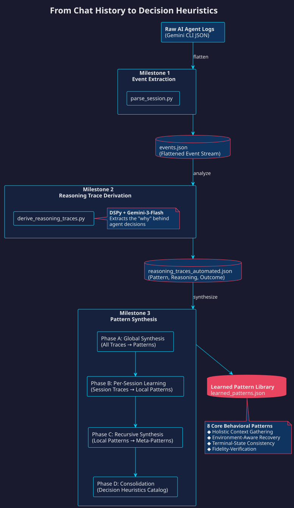

Decision Context Tracing Pipeline

The final catalog isn't a true ontology for now (no class hierarchy or relationships)—it's a decision heuristics catalog, the residue of successful coordination. It captures behavioral patterns that distinguish effective agent work from failure: